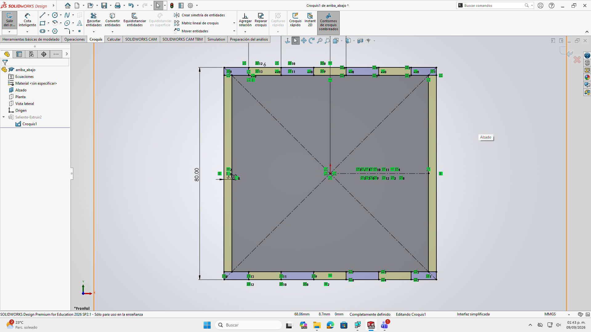
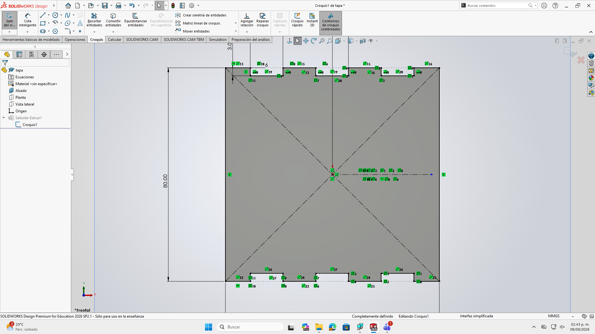
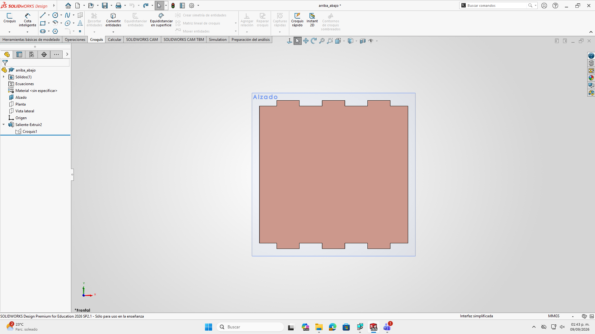
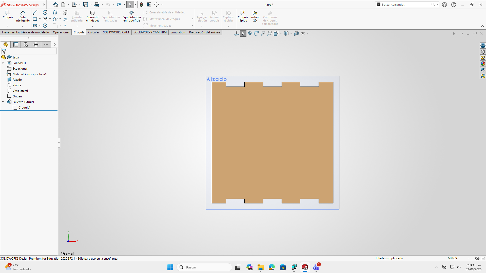
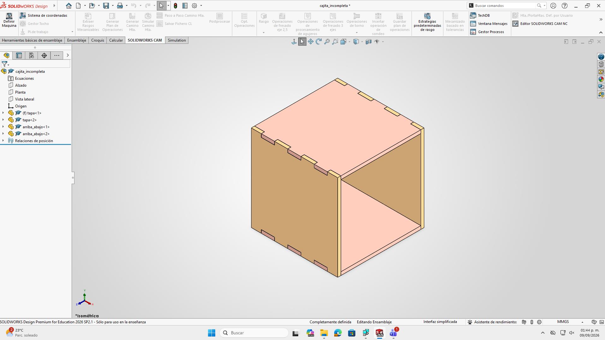
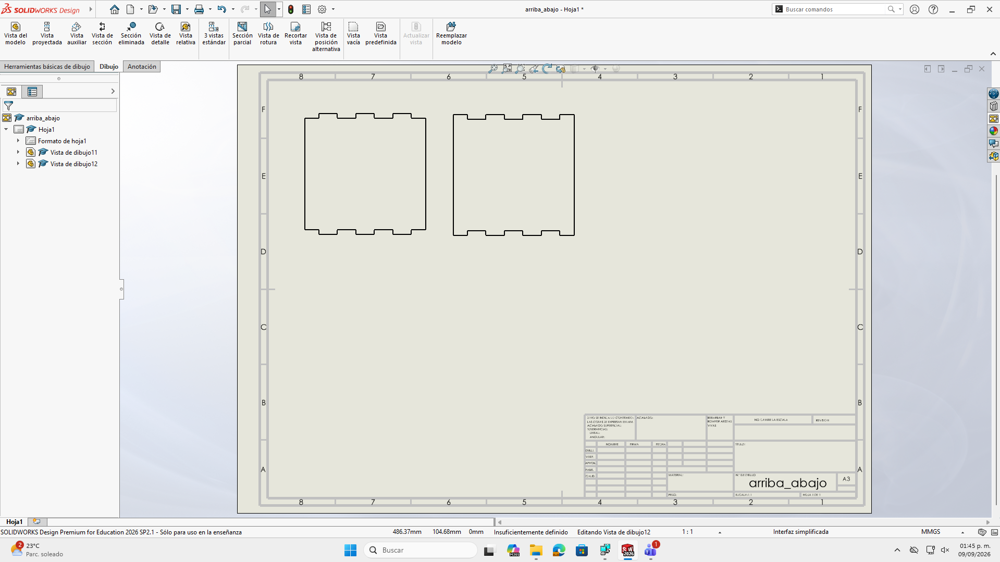

Diseño de Ensambles
En esta sesión dimos el salto del modelado de piezas individuales al diseño de ensambles, utilizando herramientas de duplicación eficiente y relaciones de posición para crear una cajita ensamblable con encajes tipo rompecabezas
1. Planificación Previa y Bocetaje
Antes de iniciar el modelado en la computadora, el primer paso fundamental es realizar un boceto a mano sobre papel:
- Permite conceptualizar las dimensiones generales y los tipos de encaje antes de trazar
- Optimiza el tiempo en software al tener claras las dimensiones y caras correspondientes
2. Herramientas Avanzadas de Croquis: Simetría y Matrices
Para optimizar el trazado de los perfiles y encajes de las caras de la caja, empleamos herramientas de automatización:
- Simetría de entidades: Permite reflejar trazados completos respecto a un eje de simetría.
- Matriz lineal de croquis: Herramienta utilizada para duplicar geometría definiendo la distancia exacta entre cada elemento y el número total de repeticiones


3. Modelado de Piezas Sólidas
Siguiendo los criterios de diseño, generamos los archivos individuales de las piezas:
- Creación de la cara frontal/lateral y de la tapa (superior/inferior)
- Uso de la operación Saliente/Extruir respetando las cotas inteligentes para asegurar que las líneas se mantengan completamente definidas (negras)


4. Creación e Inserción en el Ensamble
Una vez guardadas las piezas individuales, creamos un archivo nuevo de tipo Ensamble:
- Importación de componentes: Se insertan las piezas requeridas desde la ventana del gestor de archivos (dos tapas y dos caras laterales)
- Relaciones de posición: Se aplican restricciones geométricas entre las caras que van unidas
- Restricción de movimiento: El objetivo es eliminar los grados de libertad de cada componente hasta que la estructura quede fija como un rompecabezas 3D

5. Formato DXF para Corte Láser
Para la fabricación física de las piezas en cortadora láser (en materiales como MDF):
- Creación del plano: Se selecciona la opción de crear un Dibujo / Plano en SolidWorks
- Selección de caras: Se acomodan las vistas de las caras planas que se van a cortar sobre la plantilla del plano
- Exportación a DXF: El plano generado se guarda en formato
.DXF - Corte en taller: Este archivo
.DXFcontiene la información geométrica 2D necesaria para enviarse directamente al software de la cortadora láser

6. Tipos de Uniones y Bisagras Vivas
Como complemento conceptual a la práctica, exploramos diversos métodos de fijación mecánica y patrones de corte para material flexible:
Bisagras Vivas:
- Patrón de corte: Se diseña una serie de ranuras alternadas en un patrón de rejilla sobre la superficie fija
- Distribución: Se utiliza la herramienta de Matriz lineal para repetir los cortes a distancias muy reducidas
- Flexibilidad: Este tramado permite que un material rígido (como MDF) se dobles sin romperse al redistribuir la tensión a lo largo del corte